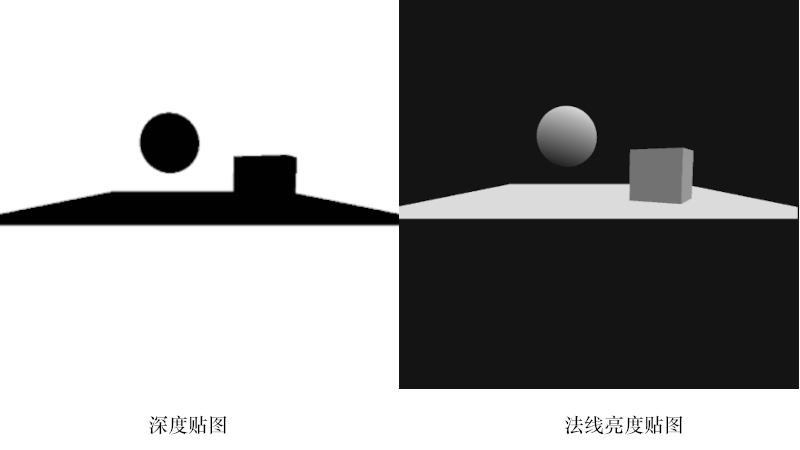
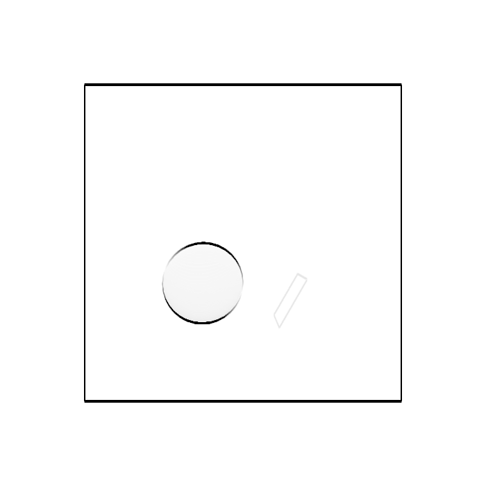
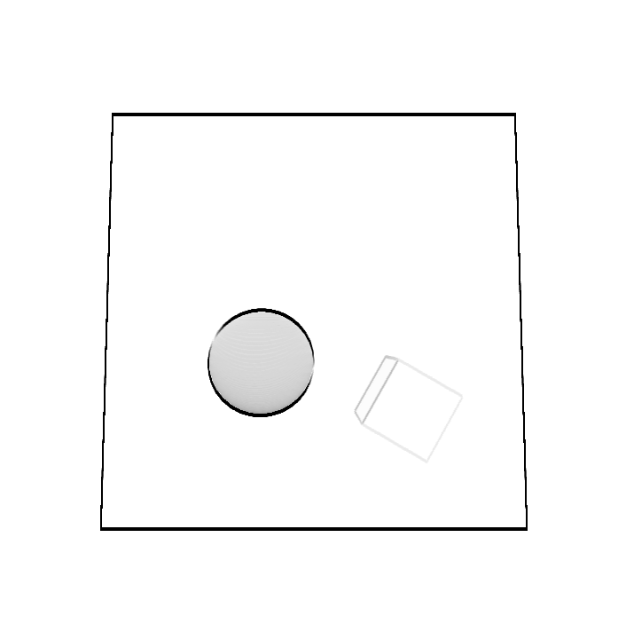
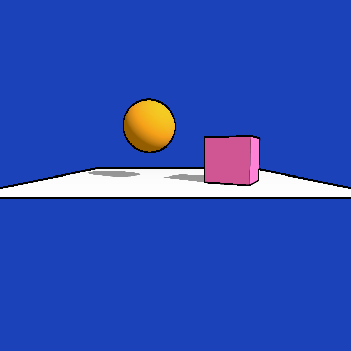
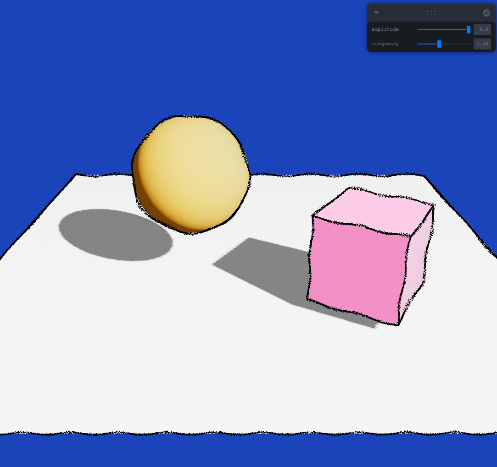
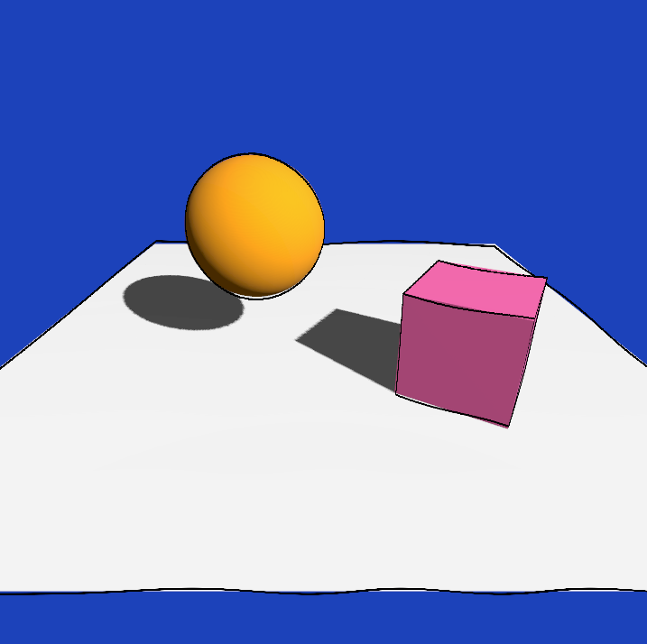
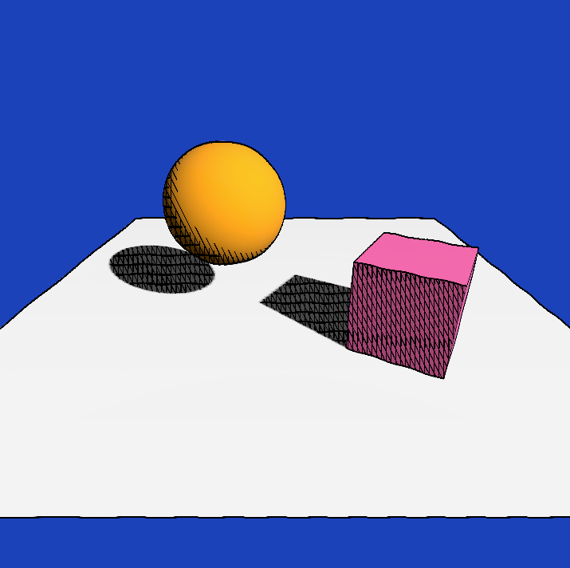
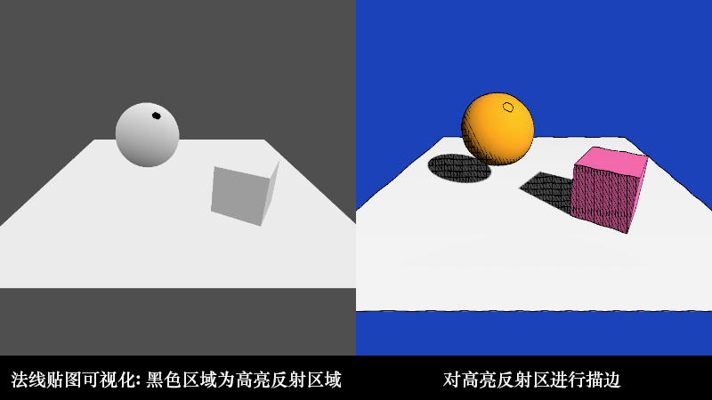
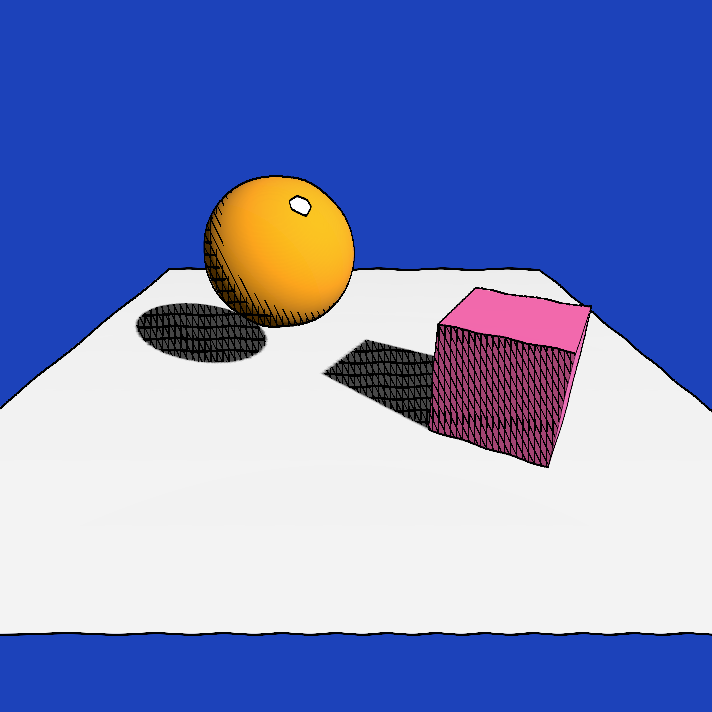
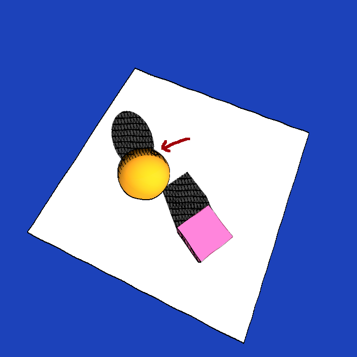

游戏 Shader 开发
Table of Contents
这篇文章主要是收集一些 3D 游戏开发常用的 Shader 技术, 以及一些风格化渲染实现.
总得来说是一篇应用类的文章, 这些应用使用了很多"基础理论", 可以从以下文章找到:
-
要求掌握线性代数, 学习对于坐标点的常用变换.
-
要求掌握线性代数, 学习
3D成像流程中需要了解的坐标系. -
了解
3D成像的总体流程以及Shader在哪些阶段中运行, 如何进行基础的Shader编程.通过
WebGL API了解贴图,FBO等概念, 以及如何在Shader中使用它们.为快速上手
Three.js提供了一些方向. -
要求掌握微积分和概率论, 学习
3D世界是如何实现光照系统.这篇文章会少量使用到贴图和
FBO这两个工具, 所以前一篇文章一定要看. -
要求掌握微积分和概率论, 学习
Shader编程中一些常用的知识点,比如如何实现随机函数, 如何检查图像边缘, 如何实现噪声等等, 另外的成像算法
RayMarching.有很多人说
ShaderToy的代码对游戏开发没有帮助, 其实是不对的, 前面这些举例在实际开发中很常见.
这些文章是按照知识点之间的依赖关系罗列好的, 如果是初学的话请务必按照顺序进行阅读.
本人最初学习图形学就是为了游戏的 Shader 编程, 因此本文在定位上可以说是 Shader 开发的最终章,
后续会不断记录游戏开发中的 Shader 技术, 这里选择 three.js 作为实践平台.
原因如下:
JavaScript/Typescript比起C++这样的编程语言更容易上手
- 运行环境容易搭建, 只要有个现代浏览器即可
相对于游戏引擎,
three.js的封装程度更低three.js缺少游戏引擎的一些高级特性, 要求开发者自行实现, 对于学习而言是有益的,以后切换到其它引擎上也是没问题的; 其次, 互联网上关于
three.js的资料十分充足,一定程度上可以弥补文档上的不足.
阅读时你会文章中的示例 Shader 与提供的 项目代码: shader-for-game-dev 有所区别,
这是因为 three.js 的 ShaderMaterial 的 Shader 本身就内置了一些 uniforms/attributes 变量,
所以项目代码的 Shader 并不会声明这些用到的变量; 文章的代码会按照 RawShaderMaterial 的 Shader 去写,
也就是文章中的示例 Shader 会把需要用到的内置 uniforms/attributes 变量也声明上,
保证示例的代码可以轻松的移至到其他框架上.
渲染到贴图 (Render To Texture)
游戏开发 经常 需要把渲染结果写入到贴图上供其它 Shader 程序使用, 本质上就是 帧缓冲(Framebuffer Object / FBO) 的应用.
Three.js 的 WebGLRenderTarget 就是对帧缓冲的高级封装, 具体用法可以参考 Three.js 中使用帧缓冲.
最常见的用法是生成场景的深度贴图, 法线贴图. 这里将会介绍一些常用的贴图生成.
当然, three.js 本身就有可以生成这两种贴图的材质, 但开发者自己也需要掌握生成的方法,
有些开发需求是标准材质满足不了的, 这时候就需要自己手动实现.
另外一个原因是其中的 Shader 代码很常见, 很多地方会用到同样的代码,
为了照顾文章篇幅, 这里列出来可用于后续的"复用".
深度贴图 (Depth Texture)
根据 图形学 - OpenGL坐标变换: 透视投影 - Depth Buffer 可得知, 深度贴图的像素用于储存深度值,
而深度值是 NDC 坐标的 \(z_{ndc}\) 分量经过归一化的结果: \(depth = z_{ndc} \times 0.5 + 0.5\).
\(z_{ndc}\) 的范围是 \([-1, 1]\), \(depth\) 的范围是 \([0, 1]\).
不同项目有不同的深度值计算方式, 这只是最常见一种方式.
实现
#version 130 attribute vec3 position; uniform mat4 modelViewMatrix; uniform mat4 projectionMatrix; void main() { gl_Position = projectionMatrix * modelViewMatrix * vec4(position, 1.0); }
Fragment Shader:
#version 130 void main() { float depth = gl_FragCoord.z * 0.5 + 0.5; gl_FragColor = vec4(depth); }
把深度值归一化到 \([0, 1]\) 有利于储存, 因为默认情况下图片就是以 RGBA 储存像素,
像素的每个组件可以被解释为在 \(x \in [0, 255]\) 内的整数, 对应 Shader 里面对应 \(\frac{x}{255} \in [0, 1]\).
当然可以对贴图进行参数设置储存 \([0, 1]\) 范围外的数值, 这样就无须归一化.
在调用渲染命令进行渲染前, 需要把这两个 Shader 封装成一个材质, 把所有物体的材质都替换成该材质再进行渲染,
整个场景的渲染结果就是深度贴图, 具体操作流程可以参考示例代码里面的文件:
应用例子
这里演示在后处理中使用深度贴图,
#version 130 attribute vec3 position; attribute vec2 uv; uniform mat4 modelViewMatrix; uniform mat4 projectionMatrix; varying vec2 vUV; void main() { gl_Position = projectionMatrix * modelViewMatrix * vec4(position, 1.0); vUV = uv; }
Fragment Shader:
#version 130 varying vec2 vUV; uniform sampler2D tDepth; uniform float uCameraNear; uniform float uCameraFar; // 把非线性深度值转换成线性深度值 float getLinearDepth(sampler2D t, vec2 uv) { vec4 pixel = texture2D(t, uv); float ndcZ = 2.0 * pixel.r - 1.0; float viewZ = 2.0 * uCameraNear * uCameraFar / (ndcZ * (uCameraFar - uCameraNear) - (uCameraFar + uCameraNear)); float modelZ = -viewZ; float linearDepth = (modelZ - uCameraNear) / (uCameraFar - uCameraNear); return linearDepth; } void main() { float linearDepth = getLinearDepth(tDepth, vUV); gl_FragColor = vec4(vec3(linearDepth), 1.0); }
法线贴图 (Normal Texture)
这里演示在后处理中使用法线贴图,
实现
Vertex Shader:
#version 130 attribute vec3 position; attribute vec3 normal; uniform mat4 modelViewMatrix; uniform mat4 projectionMatrix; uniform mat3 normalMatrix; varying vec3 vNormal; void main() { gl_Position = projectionMatrix * modelViewMatrix * vec4(position, 1.0); vNormal = normalize(normalMatrix * normal); /* normalMatrix 是 modelMatrix 的逆矩阵, 如果 Shader 版本支持 inverse 函数, 可以像以下的方式计算出变换后的法线: uniform mat4 modelMatrix; vNormal = normalize(inverse(modelMatrix) * vec4(normal, 1.0)).xyz; */ }
Fragment Shader:
#version 130 varying vec3 vNormal; void main() { vec3 normal = vNormal * 0.5 + 0.5; gl_FragColor = vec4(normal, 1.0); }
就像深度贴图归一化深度值一样, 法线向量的每个组件的范围也是 \([-1, 1]\), 所以这里也进行了归一化.
应用例子
Fragment Shader:
#version 130 varying vec2 vUV; uniform sampler2D tNormal; void main() { gl_FragColor = vec4(texture2D(tNormal, vUV).xyz * 2.0 - 1.0, 1.0); }
重新计算法线向量
在 Vertex Shader 里面对顶点 \(V_0\) 进行位移变换只影响视觉, 并非真的修改几何数据, 因此不会对法线向量 \(N\) 产生影响,
这导致了变换后的顶点坐标与法线向量 \(N\) 对应不上的问题. 在 图形学 - OpenGL坐标系变换: 法线贴图 可以了解到,
从法线贴图中读取法线需要一个 TBN 矩阵对所读取的法线进行变换, 得到一个世界坐标系的法线向量, 这才是通常使用的法线向量.
平时用的 \(N\) 就是在构建 TBN 矩阵时就顺便计算出来的, \(N\) 是在物体坐标系上, 所以以参考 TBN 的构建来重新构建法线向量.
但 TBN 矩阵的基向量都是 CPU 根据几何数据计算出来的, 而 shader 中只能获取一个顶点坐标, 这并不满足 TBN 构建的条件.
在 图形学 - OpenGL坐标系变换: 平面方程 可以学习到, 一个法线向量就能构建一个平面方程,
一个向量有无数个正交向量, 这些正交向量全都处于一个平面上, 该向量代表该平面本身, 这个向量就是俗称的法线向量.
根据这个事实, 取 \(N \cdot T = 0\) 的其中一个解作为正切向量, 再让 \(B = T \times N\) 作为副切向量.
\(T\) 和 \(B\) 是位移变换前平面上的向量, 可以通过它们找出当前顶点 \(V_0\) 的相邻顶点 \(\begin{cases} V_T = V_0 + T \\ V_B = V_0 + B \end{cases}\),
\(N\) 所代表的平面是一个无限大的平面, 包含了几何体实际的表面, 因此 \(V_T\) 和 \(V_B\) 并不一定存在,
但即便这两个顶点不实际存在, 也可以用在后续的计算并得出正确结果.
分别计算出 \(V_0\), \(V_T\) 和 \(V_B\) 经过位移变换 \(f\) 后的坐标: \(f(V_0)\), \(f(V_T)\) 和 \(f(V_B)\),
即便只是在视觉上改变了几何体的结构, 仍然可以认为:
对几何体的顶点 \((x, y, z)\) 进行 \(f\) 变换得到 \((u, v, w)\) 从而构建出新几何体.
因此, \(f\) 定义应为一个把坐标映射到新坐标的连续多元向量函数:
\(f(x, y, z) = (u(x, y, z), v(x, y, z), w(x, y, z))\), 其中 \(u, v, w\) 均为多元连续标量值函数.
重新构建新的切向量 \(T_{f}\) 和副切向量 \(B_{f}\) 确认新的平面, 最后计算出法线向量 \(N_{f}\): \(\begin{cases} T_{f} = \frac{f(V_T) - f(V_0)}{|f(V_T) - f(V_0)|} \\ B_{f} = \frac{f(V_B) - f(V_0)}{|f(V_B) - f(V_0)|} \\ N_{f} = T_{f} \times B_{f} \end{cases}\).
以下是 Vertex Shader 的伪代码:
vec3 orthgonal(vec3 v) { /* 一个向量有无数个正交向量 n, 只要满足 dot(n, v) = 0 即可, 选取正交向量时应该尽量避免那些接近零向量的正交向量, 任何非零向量与零向量进行点积/叉积/标量乘法运算的结果都是零向量. 这个正交算法是比较 v 的 x 和 z 分量的绝对值大小, 让较大的分量与 y 分量构成正交向量, 这样可以避免选取的正交向量接近零向量. */ if (abs(v.x) > abs(v.z)) { // 法线偏向 x 轴 return normalize(vec3(-v.y, v.x, .0)); } else { // 法线偏向 y 轴 return normalize(vec3(.0, -v.z, v.y)); } } vec3 calcDispNormal(vec3 oldNormal) { // oldNormal 在物体坐标系上 float pxOffset = 1.0 / resolution; // 或者一个很小的值即可 vec3 N = normalize(oldNormal); vec3 T = orthgonal(N); vec3 B = cross(T, N); vec3 positionT = position + pxOffset * T; vec3 positionB = position + pxOffset * B; vec3 dispPos = f(position); vec3 dispPosT = f(positionT); vec3 dispPosB = f(positionB); vec3 dispT = normalize(dispPosT - dispPos); vec3 dispB = normalize(dispPosB - dispPos); vec3 dispN = cross(dispT, dispB); return dispN; }
上面的内容是对以下链接的总结:
Calculating vertex normals after displacement in the vertex shader
地平线视差
很多人误以为, 这样的视觉效果可以通过把地面建模成圆柱状或球状就能实现.
但是仔细想一下就能明白这不可能, 随着视野距离越远, 地面差越大, 换而言之就是随着视野距离变大, 地面曲率越大.
如果是球体或圆柱体, 地面曲率是固定的, 且先不说建模的效果可不可行, 真要把所有物体围绕弯曲世界去建模, 工作量是非常大的,
而且不同视野距离下物体的弯曲程度也不一样, 总不能为所有可能的视野距离进行建模吧.
我们需要一个数学函数来模拟地面差的行为, 幂函数正好符合要求:
\(f(x) = (\frac{x}{r})^{c}\), 其中 \(x \gt 0\) 为视野距离, \(c \gt 1\) 是曲率指数,
\(r \gt 0\) 是曲率平缓的阈值, 当 \(x \le r\) 时曲率相对缓和, 当 \(x \gt r\) 曲率会骤然增加.
也可以使用其它符合需求的函数, 这里只是给出一个参考.
Vertex Shader:
attribute vec3 position; uniform vec3 cameraPosition; uniform mat4 modelMatrix; uniform mat4 viewMatrix; uniform mat4 projectionMatrix; varying vec3 vPosition; void main() { // 弯曲梯度: 弯曲方向以及大小, 世界坐标系 vec3 falloffWeights = vec3(.0, -1., .0); // 以视觉为准进行弯曲, 所以把弯曲梯度变换到视点坐标系 vec3 viewFalloffWeights = (viewMatrix * vec4(falloffWeights, .0)).xyz; // 计算视野距离, 但相机位置只有世界坐标系, 要把顶点变换到世界坐标系 vec3 worldPos = (modelMatrix * vec4(position, 1.0)).xyz; float viewDist = length(cameraPosition - worldPos); /* 这个计算方式会形成一种微弱的鱼目感, 即四角有一点弯曲, 如果不想要鱼目感, 可以使用线性深度作为视野距离, 又或者这样: float viewDist = length(cameraPosition.z - worldPos.z); */ // 计算弯曲程度并对顶点进行弯曲 float r = 1.0 / 25.0; float c = 5.0; float fallOff = pow(viewDist * r, c); vPosition = position + viewFalloffWeights * fallOff; gl_Position = projectionMatrix * viewMatrix * modelMatrix * vec4(vPosition, 1.0); }
这段 vertex shader 需要应用在所有物体的材质上.
像法线向量, \(uv\) 这些不需要进行弯曲变换, 但计算光照和生成阴影贴图和计算阴影时需要用上变换后的顶点坐标.
光照和阴影可以参考 图形学 - 光和材质.
描边 (Outlining)
描边常用于卡通风格渲染和水墨画渲染上, 模拟现实中的笔画/线稿.
其中比较有名的游戏例子: Borderlands 系列.
判断片元是处于轮廓上
对场景的物体进行描边, 需要先找出物体的轮廓线, 然后对轮廓线进行加黑和加粗实现描边.
为此大部分情况下, 描边效果都是在后处理中实现的, 此时描边实现变成图形处理的工作了.
在图像处理的领域中, 找出描边有很多种方式, 它们在思路上是一样的:
通过判断片元 \(p\) 与它周围片元在某个属性上否连续, 以此断定 \(p\) 是否处于轮廓边上;
如果属性不连续, 就说明 \(p\) 在物体的轮廓边上, \(p\) 就是需要描边的片元.
图像处理中的判断两个相邻片元是否在属性上连续, 等同于判断属性之间的变化是否平滑, 即求属性关于片元位置的导数.
这与在数学上的定义是完全相反, 数学上导数存在才能说连续; 但在图像处理中, 相邻片元之间连续等就是同于两者的变化平滑;
根据一阶导数的定义，可得出导数的估算方式为: \(f^{'}(x) \approx \frac{f(x + h) - f(x)}{h}\),
先考虑水平方向上相邻片元的连续性, 把 \(f\) 看作片元属性, \(x\) 看作片元的水平纹理坐标, \(h\) 意味着片元之间的距离差;
相邻片元意味着 \(h = 1\), 所以 \(f^{'}(x) \approx f(x + h) - f(x)\); 根据连续的定义, 当 \(f(x + h) - f(x)\) 足够小,
\(f\) 在 \(x\) 上连续, 那么两个片元的属性连续, 至于多少为足够小, 取决于开发者的定义了.
这里该处在各个方向上的导数估算方式: \(f^{'}(x, y) \approx \frac{f(x + \Delta x, y + \Delta y) - f(x, y)}{\sqrt{(\Delta x)^2 + (\Delta y)^2}}\), 其核心思路为 \(\frac{\mathbf{片元之间的属性差}}{\mathbf{片元之间的距离}}\).
提取描边
比较的属性一般为片元的深度值(depth)或法线(normal).
深度值用于找出物体的外轮廓, 法线则是用于找出物体的内轮廓, 把两者结合在一起就可以得出完全的轮廓图.

Figure 1: 图片来源于 How to render outlines in WebGL
3D Game Shaders For Beginners - Outlining 的实现方式则是如下:
通过计算相邻片元的 \(y\) 分量差, 找出最大的分量差, 如果最大分量差大于一定程度, 就说明该当前片元处于轮廓边上.
这种方法很简单易懂, 但提取内轮廓效果不是特别好, 所以这里就不详细介绍了.
3D Game Shaders For Beginners 所用坐标系的 \(z\) 分量是向上, 它 \(y\) 分量才是我们平时学习的 \(z\) 分量.
接下来会介绍第二种方法: Sobel核.
在图像处理中, Sobel核 是用于图像边缘检查的, 原理是计算当前片元在各个方向上的导数,
让导数集合与当前片元以及其周围片元的集合进行模式匹配, 相似程度越高, 那么当前片元就会被加强亮度, 反之变暗;
由于灰阶(gray scale)图更能突显物体的轮廓, 因此为了提高连续性判断的准确性,
在使用 Sobel核 之前通常会先生成场景的灰阶图, 再从灰阶图提取轮廓线.
这就是为什么会选择深度值做连续性判断, 因为深度贴图本身就是一张灰阶图;
法线贴图虽不是灰阶图, 但可根据法线向量计算出某种灰阶值来得出灰阶图, 比如说计算亮度,
由于连续的法线向量是相似的, 因此它们的灰阶值也是相似的, 同样可以很好地突显出轮廓线.
#version 130 varying vec2 vUV; uniform sampler2D tDiffuse; uniform sampler2D tDepth; uniform sampler2D tNormal; uniform float uCameraNear; uniform float uCameraFar; uniform vec2 uResolution; float getLinearDepth(sampler2D t, vec2 uv) { float ndcZ = 2.0 * texture2D(t, uv).r - 1.0; float viewZ = 2.0 * uCameraNear * uCameraFar / (ndcZ * (uCameraFar - uCameraNear) - (uCameraNear + uCameraFar)); float modelZ = -viewZ; float linearDepth = (modelZ - uCameraNear) / (uCameraFar - uCameraNear); return linearDepth; } float luma(vec3 color) { return dot(vec3(0.2125, 0.7154, 0.0721), color); } float convolution(vec2 uv, float[9] kernel, float[9] pixels) { float conv = 0.0; for (int i = 0; i <= 2; i++) { for (int j = 0; j <= 2; j++) { int index = j * 3 + i; conv += pixels[index] * kernel[index]; } } return conv; } void main () { vec2 uv = vUV; vec4 color = texture2D(tDiffuse, uv); vec2 texelSize = 1.0 / uResolution; // 控制描边宽度 float outlineThickness = 3.0; float attrs[9]; for (int i = -1; i <= 1; i++) { for (int j = -1; j <= 1; j++) { int index = (-j + 1) * 3 + (i + 1); vec2 coord = uv + outlineThickness * vec2(i, j) * texelSize; float d = getLinearDepth(tDepth, coord); // 这里无需把法线变量还原到 [-1, 1] 的范围， 不影响连续性判断 // float l = luma(2.0 * texture2D(tNormal, coord).xyz - 1.0); float l = luma(texture2D(tNormal, coord).xyz); // 只提取外轮廓 attrs[index] += d; // 只提取内轮廓 attrs[index] += l; // 卷积运算满足分配律: F * (G1 + G2) = F * G1 + F * G2 } } float kernelX[9] = float[9](-1.0, 0.0, 1.0, -2.0, 0.0, 2.0, -1.0, 0.0, 1.0); float kernelY[9] = float[9](1.0, 2.0, 1.0, 0.0, 0.0, 0.0, -1.0, -2.0, -1.0); float convX = convolution(uv, kernelX, attrs); float convY = convolution(uv, kernelY, attrs); float g = sqrt(convX * convX + convY * convY); // 1. 显示深度贴图 // gl_FragColor = vec4(vec3(getLinearDepth(tDepth, uv)), 1.0); // 2. 显示法线亮度贴图 // gl_FragColor = vec4(vec3(luma(texture2D(tNormal, uv).xyz)), 1.0); // 3. 显示轮廓图 gl_FragColor = vec4(1.0 - vec3(g), 1.0); }

Figure 2: 从深度贴图提取外轮廓; 从法线贴图的亮度图中提取内轮廓
从效果来看, 法线贴图就基本上能内外轮廓一起提取了, 因此, 有些实现是不会用上深度贴图提取外轮廓的.
但法线贴图在某些情况下并不能很好的获取到内轮廓, 比如图中的情况:
在俯视角上, 地板与立方体的法线不存在差异, 看上去就是连续的, 导致无法识别轮廓.

Figure 3: 从法线亮度图提取的轮廓图 (俯视角)
(PS: 这里相机还是稍微偏了一点, 否则完全看不到立方体)
在俯视角上, 地板和立方体的唯一区别就只有它们的深度值了, 这里立方体顶部的深度值要稍微比地板的要小,
所以结合(深度)外轮廓图可以给地板和立方体增加一个差异, 这样就可以对两者进行区分从而正确识别轮廓.
不过还有一个问题, 那就是地板和立方体的深度值差异太小了, 最终效果和原本没太大差别,
所以在两者结合的情况下, 需要提高深度值的权重, 从而提高地板和立方体的深度值差异.
// 只提取外轮廓, 给深度值添加权重 25.0 attrs[index] += 25.0 * d; // 只提取内轮廓 attrs[index] += l;

Figure 4: 两贴图一同提取轮廓, 并增强后深度值后的权重 (俯视角)
对场景进行描边
最后就是让描边图与场景图结合在一起, 做法是让场景图的像素和描边像素混合.
// gl_FragColor = vec4(1.0 - vec3(g), 1.0); vec4 color = texture2D(tDiffuse, uv); // 场景像素 vec4 outlineColor = vec4(0.0, 0.0, 0.0, 1.0); // 描边颜色 gl_FragColor = mix(color, outlineColor, g);

Figure 5: 对场景进行描边
完整代码
这组 Shader 要应用在后处理上, 深度贴图和法线贴图的生成可以参考 Render To Texture.
Fragment Shader:
varying vec2 vUV; uniform sampler2D tDiffuse; uniform sampler2D tDepth; uniform sampler2D tNormal; uniform float uCameraNear; uniform float uCameraFar; uniform vec2 uResolution; float getLinearDepth(sampler2D t, vec2 uv) { float ndcZ = 2.0 * texture2D(t, uv).r - 1.0; float viewZ = 2.0 * uCameraNear * uCameraFar / (ndcZ * (uCameraFar - uCameraNear) - (uCameraNear + uCameraFar)); float modelZ = -viewZ; float linearDepth = (modelZ - uCameraNear) / (uCameraFar - uCameraNear); return linearDepth; } float luma(vec3 color) { return dot(vec3(0.2125, 0.7154, 0.0721), color); } // 卷积运算符 float convolution(vec2 uv, float[9] kernel, float[9] pixels) { float conv = 0.0; for (int i = 0; i <= 2; i++) { for (int j = 0; j <= 2; j++) { int index = j * 3 + i; conv += pixels[index] * kernel[index]; } } return conv; } void main () { vec2 uv = vUV; vec4 color = texture2D(tDiffuse, uv); vec2 texelSize = 1.0 / uResolution; float outlineThickness = 3.0; vec4 outlineColor = vec4(0.0, 0.0, 0.0, 1.0); float attrs[9]; for (int i = -1; i <= 1; i++) { for (int j = -1; j <= 1; j++) { int index = (-j + 1) * 3 + (i + 1); vec2 coord = uv + outlineThickness * vec2(i, j) * texelSize; float d = getLinearDepth(tDepth, coord); // 这里无需把法线变量还原到 [-1, 1] 的范围， 不影响连续性判断 // float l = luma(2.0 * texture2D(tNormal, coord).xyz - 1.0); float l = luma(texture2D(tNormal, coord).xyz); // 只提取外轮廓 attrs[index] += 25.0 * d; // 只提取内轮廓 attrs[index] += l; // 卷积运算满足分配律: F * (G1 + G2) = F * G1 + F * G2 } } float kernelX[9] = float[9](-1.0, 0.0, 1.0, -2.0, 0.0, 2.0, -1.0, 0.0, 1.0); float kernelY[9] = float[9](1.0, 2.0, 1.0, 0.0, 0.0, 0.0, -1.0, -2.0, -1.0); float convX = convolution(uv, kernelX, attrs); float convY = convolution(uv, kernelY, attrs); float g = sqrt(convX * convX + convY * convY); // 1. 显示深度贴图 // gl_FragColor = vec4(vec3(getLinearDepth(tDepth, uv)), 1.0); // 2. 显示法线亮度贴图 // gl_FragColor = vec4(vec3(luma(texture2D(tNormal, uv).xyz)), 1.0); // 3. 显示轮廓图 // gl_FragColor = vec4(1.0 - vec3(g), 1.0); // 4. 对场景进行描边 gl_FragColor = mix(color, outlineColor, g); }
莫比斯风格渲染 (Moebius Style Shading)
在空余时间受 Useless Game Dev - Moebius-style 3D Rendering 的启发实现了莫比斯风格渲染,
期间还参考了 Moebius-style post-processing and other stylized shaders,
无论是
shader的实现思路还是three.js的使用方面都能学到不少东西, 于是决定进行一番记录.
整体思路
整个实现分为 3 个步骤来完成对莫比斯风格的复刻:
第 1 步: 对场景进行描边;
第 2 步: 找出阴影区域, 并绘制自定义形状的阴影;
第 3 步: 找出高亮反射区, 为它描边并对反射区域进行涂白.
描边处理
描边的具体实现就不赘述了, 不过我们要在原有代码上做一些调整, 使得描边类似与手绘那样带有一些扭曲.
参考的文章使用了随机函数来生成随机偏移, 从而实现描边扭曲,
vec2 displacement = vec2( (hash(gl_FragCoord.xy) * sin(gl_FragCoord.y * frequency)) , (hash(gl_FragCoord.xy) * cos(gl_FragCoord.x * frequency)) ) * amplitude /resolution.xy; // hash 是随机函数
但有一个问题, 随机函数的过渡不平滑, 在描边的扭曲幅度(amplitude)稍大(实际上不需要很大)时呈现雪崩效应, 描边会出现断开并形成噪点.

Figure 6: 原实现的效果: 描边断裂, 形成噪点
雪崩效应是指, 函数的输入值只要产生很小的变化就能导致输出值产生较大的变化,
这与函数的连续定义相违背: 连续的函数就是当输入值的变化足够小的时候，输出的变化也会随之足够小的函数.
为了解决这个问题, 我换成了用梯度噪声生成偏移, 强行保证即便描边的扭曲幅度再大也不会断开.
vec2 texelSize = 1. / uResolution; float amplitude = 1.2; float frequency = noise(gl_FragCoord.xy * texelSize) / amplitude * 0.6; /* noise 是 2D 梯度噪声, 这里对噪声值除以最大幅度, 是为了当扭曲幅度越大时, 扭曲之间的间隔也越大, 从避免线条杂乱 */ vec2 displacement = vec2(sin(gl_FragCoord.y * frequency), cos(gl_FragCoord.x * frequency)) * amplitude * texelSize; float attrs[9]; for (int i = -1; i <= 1; i++) { for (int j = -1; j <= 1; j++) { int index = (-j + 1) * 3 + (i + 1); vec2 coord = uv + displacement + outlineThickness * vec2(i, j) * texelSize; float d = getLinearDepth(tDepth, coord); float l = luma(texture2D(tNormal, coord).xyz); attrs[index] = d + l; } }
Figure 7: 优化过后的描边没有颗粒感

Figure 8: 扭曲幅度为 5.0 对齐原代码进行对比, 描边扭曲程度较大, 但依然没断裂
找出场景的阴影区域
我们不需要使用阴影贴图就可以大概找出场景的阴影区域, 思路是使用亮度函数把场景渲染结果转换成亮度灰阶图:
float luma(vec3 color) { return dot(vec3(0.2125, 0.7154, 0.0721), color); }
当片元的亮度小于一定值时就可以认为片元处于阴影区域, 这里把阴影区域按照亮度从大到小划分为 3 个等级:
当阴影区域的亮度达到最大等, 在阴影区域上绘制斜线作为阴影线; 如果亮度达到中级, 在原有阴影线上 添加 垂直线作为阴影线;
如果亮度达到最小等级, 在原有阴影线 添加 水平线作为阴影线; 总而言之, 就是阴影区域亮度越底阴影线越多.
#define LOW_LUMA_1 0.32 #define LOW_LUMA_2 0.18 #define LOW_LUMA_3 0.04 vec4 pixelColor = texture2D(tDiffuse, uv); float pixelLuma = clamp(luma(pixelColor.rgb), .0, 1.); float interval = 20.0; // 阴影线的间隔 float shadowThickness = 4.0; // 阴影线的粗细 // 绘制斜对角阴影线 if (pixelLuma <= LOW_LUMA_1 && depth <= 0.99) { // 转 x 轴对齐对角线, 在旋转后的 x 轴方向绘制线条 float angle = -atan(uResolution.y, uResolution.x); float rx = dot(vec2(cos(angle), -sin(angle)), uv); // 每 interval 个单位绘制一条粗细为 4 的对角线 if (mod((rx + displacement.x) * uResolution.x, interval) < shadowThickness) { pixelColor = outlineColor; } } // 绘制垂直阴影线 if (pixelLuma <= LOW_LUMA_2 && depth <= 0.99) { if (mod((uv.x + displacement.x) * uResolution.x, interval) < shadowThickness) { pixelColor = outlineColor; } } // 绘制水平阴影线 if (pixelLuma <= LOW_LUMA_3 && depth <= 0.99) { if (mod((uv.y + displacement.y) * uResolution.y, interval) < shadowThickness) { pixelColor = outlineColor; } }
这里的阴影并不是光照计算意义上的阴影, 只是对场景色彩暗部的筛选结果, 因此, 阴影的等级划分取决于场景色彩,
如果场景色彩偏深的话, 那么阴影区最大等级的亮度值应偏小一点, 否则整个场景将会被大面积打上阴影线;
相反场景色彩偏浅, 阴影区最大等级的亮度值应偏大一点, 否则整个场景找不到一处阴影.
这也就是为什么按照其他人的方法去实现可能会得出不一样的效果, 因为大家的场景是不一样的.

Figure 9: 绘制阴影线
既然这里的阴影不是真阴影, 那么可以通过真正的光照计算得出阴影再绘制阴影线吗?
如果想完全精确的绘制阴影线, 通过阴影贴图来判断片元是否处于阴影区是非常正确的做法.
不过我们这种方法本身也能真阴影绘制阴影线, 还能通过控制某处的颜色深浅来决定是否绘制阴影线.
用哪种方法取决于开发者.
绘制高亮反射区域
大体思路是通过光照计算找出高亮反射区域, 并使用特殊值对高亮反射区域内的片元进行标记.
通常来说需要多一张贴图来储存标记结果的, 幸好描边用的法线贴图生成是自己实现的, 可以在它的基础上修改标记出高亮区域.
原理很简单, 法线贴图是用来做连续性测试的, 通过像 \((0.0, 0.0, 0.0)\) 特殊值作为输出的法线破坏原有法线贴图的连续性,
而这些特殊法线本身又形成一个新的连续区域, 从而勾勒出高亮区域.
为了方便实现, 使用的光照模型为 图形学 - 光和材质: OpenGL 的基础光照模型 - Blinn-Phong shading model.
修改后的法线贴图生成用的 Vertex Shader:
varying vec3 vNormal; varying vec3 vPosition; void main () { vec4 modelPosition = modelMatrix * vec4(position, 1.0); gl_Position = projectionMatrix * viewMatrix * modelPosition; vPosition = modelPosition.xyz; vNormal = normalize(normalMatrix * normal); }
修改后的法线贴图生成用的 Fragment Shader:
varying vec3 vNormal; varying vec3 vPosition; uniform vec4 uLightPos; void main () { vec3 viewDir = normalize(cameraPosition - vPosition); vec3 lightDir = normalize(uLightPos.w > 0.0 ? uLightPos.xyz - vPosition: uLightPos.xyz); vec3 halfDir = normalize(viewDir + lightDir); float shiness = uLightPos.w > 0.0 ? length(uLightPos.xyz - vPosition) * 4.0: 60.0; float kSpecular = pow(max(dot(halfDir, vNormal), .0), shiness); float kDiffuse = max(dot(vNormal, lightDir), .0); vec3 color = vec3(vNormal * 0.5 + 0.5); // 光线和法线之间的角度需要小于 41 度且 halfDir 和视线之间的角度小于 60 角时标记为高亮 if (kDiffuse > 0.75 && kSpecular >= .5) { color = vec3(0.0); } // 输出 kDiffuse 作为光照计算结果, 高亮区域已经被法线标记, 所以 kSpecular 就不需要返回 gl_FragColor = vec4(color, kDiffuse); }
现在的渲染结果可以勾勒出高亮反射区了,

Figure 10: 勾勒高亮反射区域
最后就是给高亮区域涂抹成白色(高亮区域基本都是白色的), 这一步有两个点需要注意:
第一, 考虑光照计算的结果是否应该参与渲染, 参与的话如何参与; 第二, 只有非阴影区域才有能高亮反射区域.
对于第一点, 我个人的想法是可以参与, 但要调整好阴影区域的亮度等级划分, 以及参光照计算结果的参与程度,
具体计算方式如下:
float diffuseFactor = 0.17; float pixelLuma = clamp(luma(pixelColor.rgb) + normal.a * diffuseFactor, .0, 1.); /* normal.a * diffuseFactor 的最大值为 diffuseFactor, diffuseFactor 应为一个亮度等级差, 意味着最大程度可以为画面阴影区域的亮度提高一个等级, 从而减少阴影线的密度, 你也可以有自己的计算方法 */ // ... // 绘制高亮区 if (pixelLuma > LOW_LUMA_1 && depth <= 0.99) { // pixelLuma > LOW_LUMA_1 表示片元不在阴影区, 在阴影区时直接不绘制高亮区域 if (all(lessThanEqual(normal.xyz, vec3(0.0)))) { pixelColor = vec4(1.0); } }

Figure 11: 莫比斯风格渲染的最终效果
高亮反射区域的描边在刚进入阴影区时没有完全消失,
原因是在计算法线贴图时没有正确的方法来计算亮度, 导致高亮区的标记除了一点偏差;

Figure 12: 阴影区出现了高亮反射区的轮廓
解决方法有两种:
第一种方法是在渲染法线贴图时, 使用场景贴图配合光照计算得出片元的颜色, 计算该片元亮度后再进行标记;
第二种方法是在渲染法线贴图时, 使用阴影贴图判断片元是否在阴影区, 只有不在阴影区才有机会片元进行高亮标记.
第二种方法比较准确一点, 然而这两种方法都需要使用额外贴图, 这意味着需要额外多一个阶段的渲染.
妥协于篇幅有限, 到此为此整个莫比斯风格渲染完成.